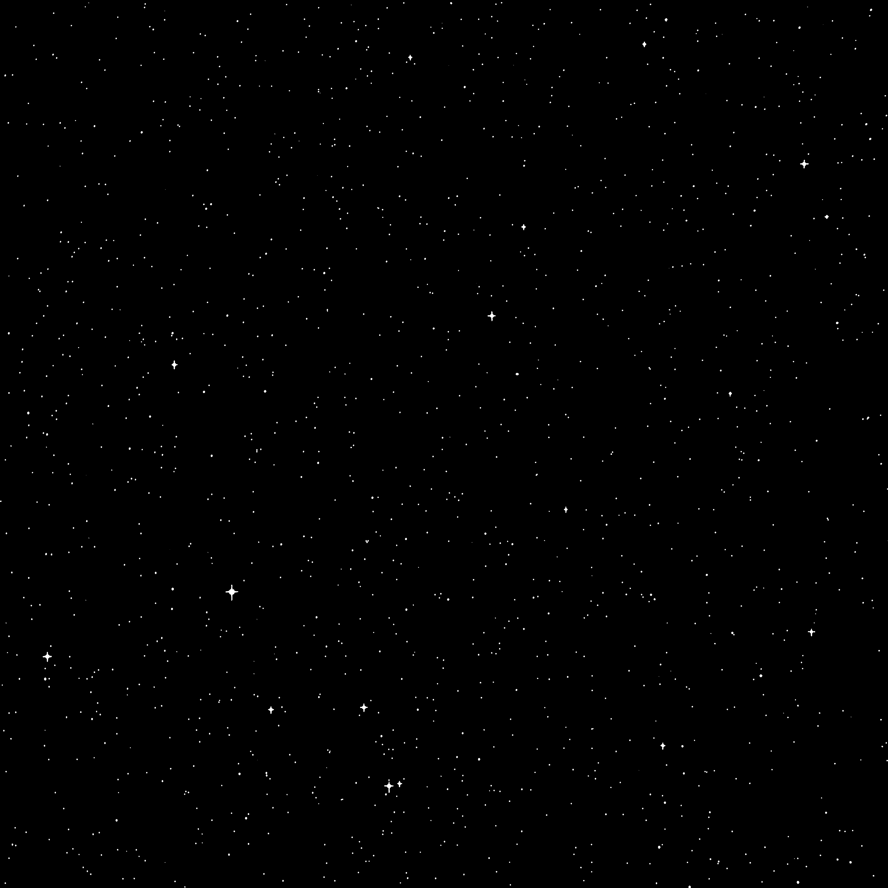
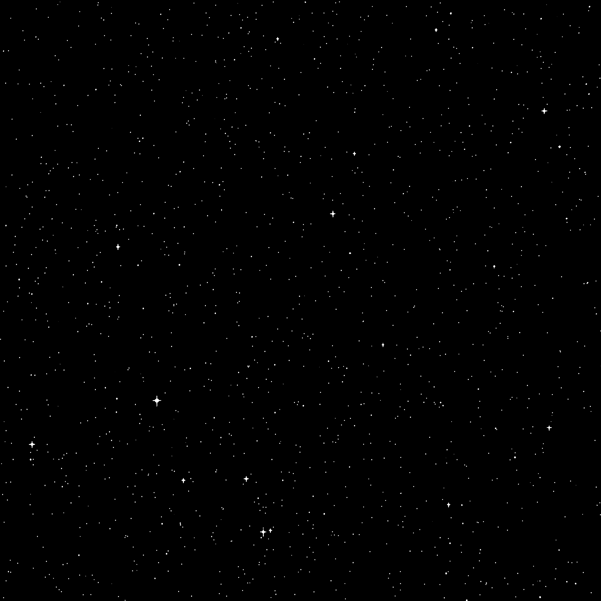
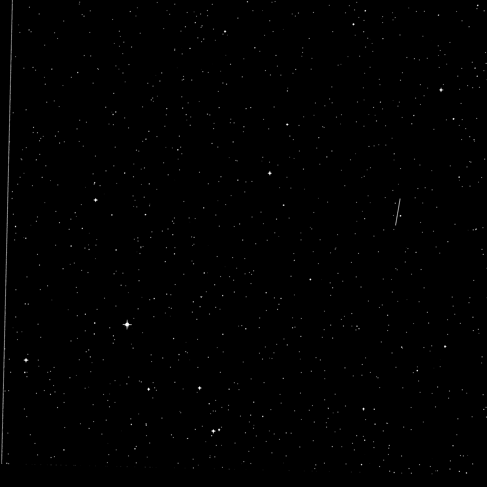
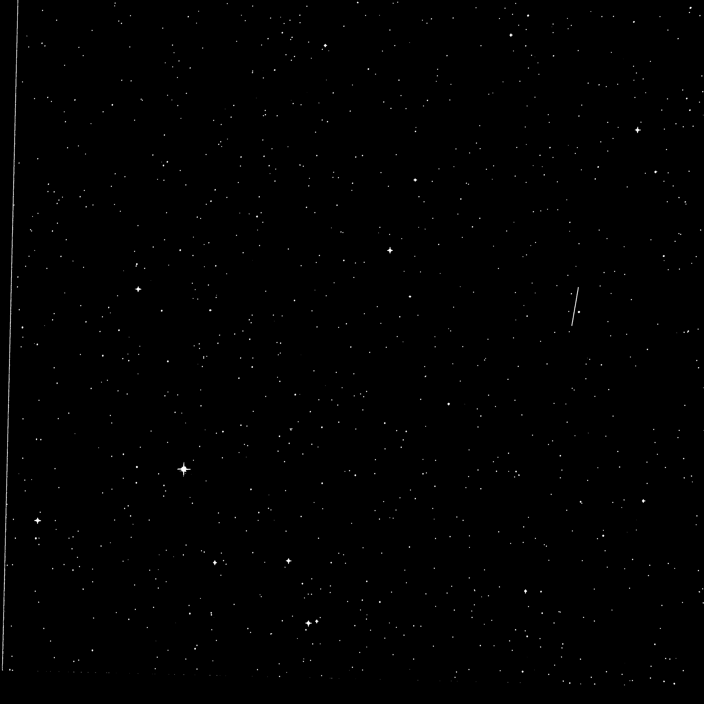

Deep learning-assisted near-Earth asteroid tracking in astronomical images
Submitted to Advances in Space Research (ASR) 2023.
- Zhenhong Du1,2,3
- Hai Jiang*1
- Xu Yang1,3
- Hao-Wen Cheng1
- Jing Liu1,3
2 Zhejiang University
3 Laboratory of Pinghu
*Denotes corresponding author
Abstract
The large number of Near-Earth Asteroids (NEAs) have seriously affected human space activities and Earth security. However, it is still a great challenge to detect NEAs in astronomical images with the influence of complex variation backgrounds. In this paper, we combined a deep learning-assisted single-frame object detection scheme with multi-frame motion information based moving object tracking algorithm, constructing a possible pipeline for faint asteroid tracking, which provides a feasible solution for NEA tracking in astronomical images. First, the object detection problem in single-frame is converted to a segmentation problem, avoiding the identifiability difficulties between asteroid and stars. Then, a multi-frame motion prior-based moving object tracking algorithm is proposed. Finally, the pipeline is tested with real astronomical images captured by ground-based telescopes, results show that our pipeline can effectively detect and track faint NEA in complex background.
Pipeline
We propose a new pipeline for tracking small and dim asteroids in ground-based telescope images. Traditional deep learning-based object tracking algorithms struggle to distinguish small objects (such as stars and asteroids) and require massive labeled datasets, making them infeasible for tracking dim and small asteroids. Our method decomposes the complex small object tracking problem into two subproblems: deep learning segmentation problem and multi-frame tracking problem, enabling robust tracking even in varying backgrounds.
Star segmentation
Segmentation results using a small amount of labeled data.PS: You can drag your mouse to view the segmentation results below.
Time point-1
 

Telescope:
Korla.
Aperture:
70cm.
Camera:
4K × 4K sCMOS.
Field of view:
1.7° × 1.7°.
Resolution:
1.5”/pixel.
Location:
Long. 86°14'6.15" E, Lat. 41°33'9.64" N, Alt. 895m.
Description:
Left: raw data;
Right: segmentation result.
Time point-2
 

Telescope:
Korla.
Aperture:
70cm.
Camera:
4K × 4K sCMOS.
Field of view:
1.7° × 1.7°.
Resolution:
1.5”/pixel.
Location:
Long. 86°14'6.15" E, Lat. 41°33'9.64" N, Alt. 895m.
Description:
Left: raw data;
Right: segmentation result.
Robust segmentation in varying backgrounds
Tracking results
Tracking results using our pipeline.
Acknowledgements
Thanks to Michaël Gharbi and Lior Yariv for the website template.